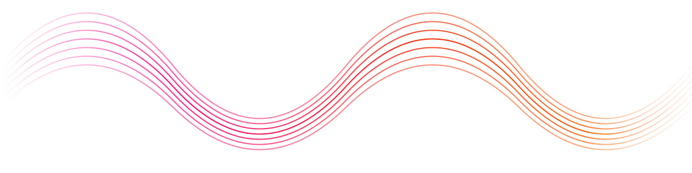
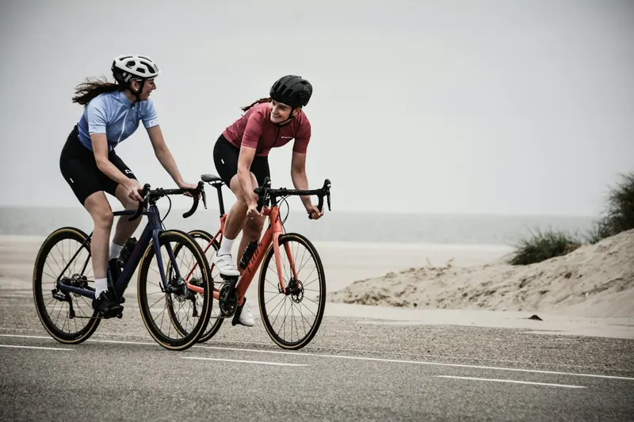

Знать, как жить, — легко. FOLLOW помогает действительно так жить.
Приложение превращает ваши данные о сне, движении и питании в несколько простых действий на сегодня.
Хочу ранний доступУзнаёте себя?
Отметьте, что про вас
Отмечено: 1 — передадим в анкету
Последняя миля — это всегда разрыв между «знать» и «делать». FOLLOW — чтобы делать.

- Измерять✓
- Понимать✓
- Рекомендовать✓
- СледоватьFOLLOW
Замеры. Графики. ИИ опять даёт советы. Но хорошая рекомендация сама по себе не делает жизнь лучше.
- 1Подключи то, что уже естьЧасы, кольцо, браслет.
- 23 действия на сегодняВместо 33 советов.
- 3Делай вместеПротоколы и челленджи — вместе с другими или с самим собой.
Помощник объясняет себя
Спросите — и увидите, на чём основан совет.
Почему сегодня лёгкая тренировка?
Вы спали 6 ч, пульс покоя выше обычного на 5 уд/мин. Сегодня лучше 30 минут спокойно, чем час через силу.
Больше делегируешь — больше получаешь.
Follow
30 дней глубокого сна
Утренняя энергия
Белок на завтрак
Протокол раннего подъёма
Восстановление как у профи
Здесь появятся эксперты, которые согласились делиться своими протоколами.
Челлендж «10 000 шагов вместе»
Без давления
- Без давления. Всегда можно вернуться.
- Без анкет и дневников. Заполняй только то, что хочешь сам.
- Всегда видно, что факт, что гипотеза, а что рекомендация.
- Не оптимизируйте себя. Пойми себя.
Характер помощника — выбираете вы
«Доброе утро. Сегодня спокойный день — 30 минут прогулки будет достаточно.» · сводка раз в неделю

Что получают ранние пользователи
Ранний доступ
бесплатно
бесплатно
Прямой чат
с командой
с командой
Ваши идеи
попадают в релиз
попадают в релиз
6 месяцев Premium
после запуска
после запуска
Кого мы ищем
- Смартфон на iOS или Android
- Готовы 4 недели пользоваться приложением
- Раз в неделю ответить на 3 вопроса
- По желанию — 30-минутное интервью
Часы или кольцо — плюс, но не обязательны.
Вопросы
Нет. FOLLOW не является медицинским изделием и не заменяет консультацию врача. Мы не ставим диагнозов и не спрашиваем о болезнях.
Apple Watch, Oura, Garmin, Xiaomi/Amazfit, Huawei, Samsung — через Apple Health и Health Connect. Без устройств тоже можно.
На серверах в России. Что FOLLOW помнит о вас, видно в приложении — любой пункт можно стереть.
Тест бесплатный. Тестерам после запуска — 6 месяцев Premium.
Пришлём письмо со ссылкой на сборку, когда откроется ваша волна.
Ничего страшного. Пропуск — не провал: просто напишите, что не подошло, это тоже помогает.
Да. После записи у вас будет ссылка: каждый друг поднимает вас в очереди, три друга — место в первой волне.
Начните жить так, как давно знаете
Вопрос 1 из 5
Вы в списке
Мы пришлём письмо, когда откроется ваша волна. Позовите друзей — по вашей ссылке они попадут в тот же список.